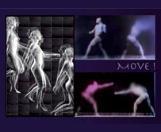

2010 Exhibitions
December 2010
Boriana Kantcheva Strange Lands
December 3 - 29, 2010
view exhibition
November 2010
Gary Duehr Erasures
November 5 - 27, 2010
view exhibition
October 2010
David Lloyd Brown Orange Paintings
October 1 - 30, 2010
view exhibition

September 2010
MOVE! Jeffrey Heyne and Rufus Butler Seder, Sept 1-26 2010
view exhibition


March 2010
Nan Freeman - Master Drawings March 3 - April 17, 2010
view exhibition